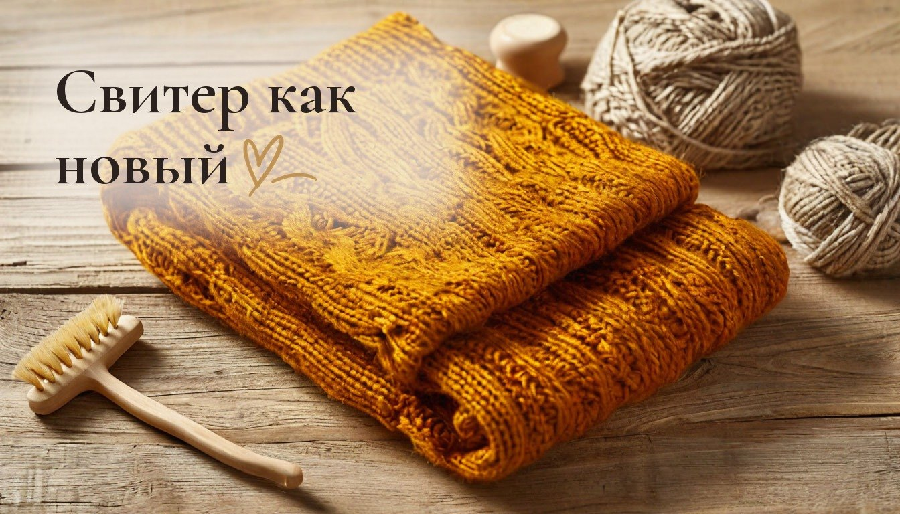
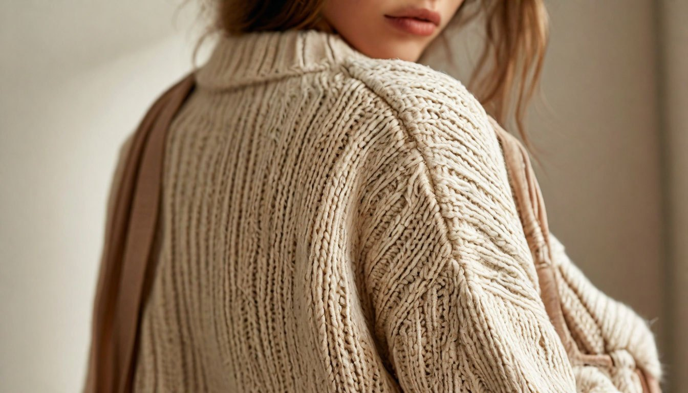

Как убрать катышки со свитера и почему они появляются снова: 5 причин

Свитер, купленный прошлой осенью, к середине зимы покрылся катышками под мышками и на боках. Почистили машинкой, надели пару раз, и они вернулись.
У нас осенью свитера носит вся семья, и я давно заметила: у одних вещей катышки появляются за неделю, а другие выглядят прилично годами. Разница чаще не в цене, а в том, как вещь носят и стирают.
Катышки появляются от трения: короткие волокна вытягиваются из нити и скатываются в шарики. Убрать их несложно, но если не убрать причину, через неделю всё повторится. Вот пять причин, о которых чаще всего не думают.

Причина №1: сумка через плечо и ремень безопасности
Самый неочевидный виновник. Сумка, которая весь день трётся о бок, и ремень в машине работают как наждачка. Поэтому катышки часто появляются не везде, а полосой на одном плече или на боку.
Что делать: в любимом свитере носить сумку в руке или на другом плече. А в машине накинуть сверху куртку или шарф там, где проходит ремень. Рюкзак тоже трёт, особенно на спине и плечах, поэтому школьные свитера страдают первыми.
Причина №2: стирка вместе с джинсами и полотенцами
В барабане свитер трётся о грубые ткани, молнии и пуговицы. За одну стирку на нём появляется больше катышков, чем за неделю носки.
Что делать: стирать трикотаж отдельно, вывернув наизнанку, в мешке для стирки. Программа для шерсти или деликатная, 30 градусов, отжим не выше 600 оборотов. Средство лучше жидкое: порошок хуже вымывается из плотной вязки.
Причина №3: свитер не отдыхает
Когда одну и ту же вещь носят несколько дней подряд, волокна не успевают восстановиться и истираются быстрее.
Что делать: чередовать свитера хотя бы через день. После носки встряхнуть и сложить на полку, а не бросать на спинку стула. Вешать свитер на плечики тоже не стоит: на плечах появятся вытянутые бугорки.
Причина №4: неправильная сушка
Мокрый трикотаж на верёвке или на батарее растягивается, волокна расходятся, и их легче вытянуть трением. А горячая батарея ещё и пересушивает пряжу.
Что делать: сушить свитер горизонтально на полотенце или сетке, подальше от батареи. Перед этим отжать в полотенце, не выкручивая.
Причина №5: неудачный состав
Свитера с синтетикой в составе часто покрываются катышками сильнее: прочное синтетическое волокно не обрывается, а держит шарик на поверхности. Хорошая шерсть тоже может давать катышки, но обычно меньше и в первые носки.
Что делать: перед покупкой потереть ткань в незаметном месте ладонью секунд десять. Если на ней уже появились ворсинки, дома будет хуже. А ещё стоит заглянуть под мышки свитера на манекене: если ткань там уже потёрта, это плохой знак.
Как убрать катышки, которые уже есть
Удобнее всего специальной машинкой для катышков: она срезает их, не трогая основную ткань. Вести по свитеру, разложенному на ровной поверхности, без нажима.
Если машинки нет, можно аккуратно пройтись новой бритвой по натянутой ткани. Только очень осторожно и не по тонкому трикотажу: легко срезать лишнее.
От автора
Мне всегда жаль, когда хорошая вещь теряет вид за один сезон. Чаще всего дело не в качестве, а в мелочах: сумке на плече, общей стирке, сушке на батарее. Их легко поменять, и свитер прослужит ещё не одну зиму.
С детскими свитерами ещё сложнее: их носят каждый день, валяются в них на полу с кошкой. Поэтому в доме с детьми машинка для катышков пригодится точно.
Подписывайтесь, чтобы не пропустить следующий разбор: как ухаживать за пальто из шерсти, чтобы к ноябрю оно не выглядело уставшим.
А у вас есть свитер, который вы спасли от катышков, или такой, который пришлось отпустить?